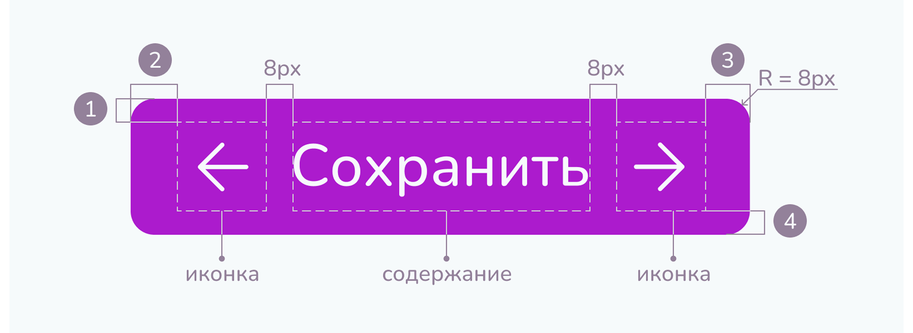
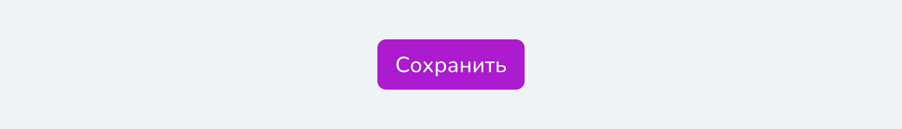
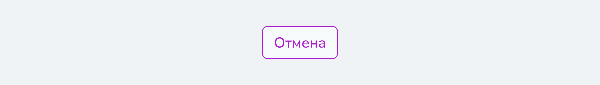
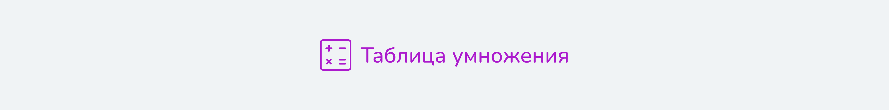

<body>
<pre><code class="language-html">...</code></pre>
</body>Кнопки
Кнопки используются для выполнения действий и навигации по страницам.
Анатомия
Спецификация
Стиль
Primary
Для целевого и главного действия в информационном блоке. Чтобы не запутать пользователя, необходимо размещать только одну кнопку этого стиля в блоке.
Secondary
Для действий, которые важно видеть, но которые не являются целевыми для пользователя. Таким стилем должны быть выполнены большинство кнопок возврата к исходному состоянию (для отмены удаления, возвращения на прошлую страницу и т.д.).
Empty
Для действий, имеющих наименьший приоритет важности, например, справочной информации, которая пригодится только некоторым пользователям. Такие кнопки могут быть вписаны в текст.
Размер
- Medium используется по умолчанию на страницах и в модальных окнах.
- Small используются в малых контейнерах (ячейки таблицы, карточки игры и т.д.).
- Large используются на одноэкранных страницах (например, страница игры), где они являются одним из единственных элементов.
Иконки
Служат для быстрого понимания сути последующего сообщения, поэтому должны всегда быть информационно релевантными. Кнопки с иконкой всегда предпочтительнее кнопок без них, поскольку иконки облегчают понимание. Лучше использовать левую иконку для однообразие и с учетом направления чтения, однако допустимо использовать правую иконку в эстетических целях. Запрещено использовать обе иконки одновременно.
Текст
Содержание
Кнопки приводят к действиям, поэтому текст кнопки предпочтительно должны содержать или глагол («Сохранить», «Удалить»), наречие («Вперед», «Назад») или название модального окна, которое откроется («Таблица умножения», «Условия игры»). Следует избегать использования частиц («Да», «Нет»), вместо этого нужно выражать действие более ясно («Выйти без сохранения»).
Использование знаков препинания не рекомендуется. Рекомендуется писать текст не длиннее 19 символов и не больше 5 слов.
Оформление
Кнопки полностью наследуют стили у наборного текста. Текст должен быть написан с большой буквы, остальные буквы должны быть строчными.
.punctuation { color: black;}
.bracket { color: blue;}
.css .property { color:22px;}
.css .numerical { color:seagreen;}
.css .letter { color:cornflowerblue;}